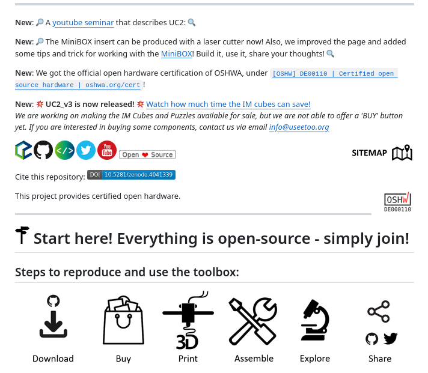
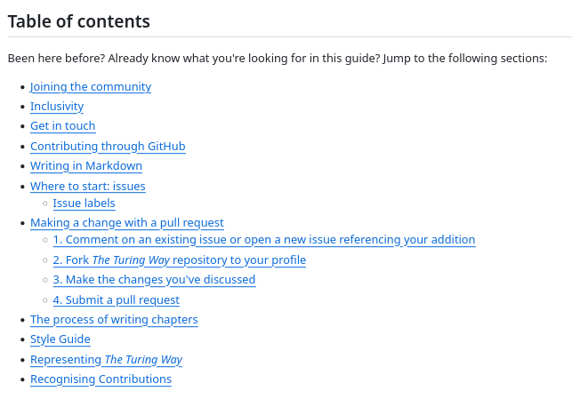

5. Documenting for reuse#
{kind=link}
About your project#
Your OSH project should at a minimum provide a license together with a README file or website with all the basic, general information a newcomer needs to get oriented. Include a general description of the hardware’s identity and purpose, written as much as possible for a general audience.
Your goal is to communicate quickly your value proposition. What problem are you trying to solve? How your project is meant to address it, for whom? Explain what the project is and what it is for, before you get into the technical details.
Document the current state, ongoing development, and/or any future plans for the project. Add information on available resources and recommended practices to ensure everyone is on the same page. Provide overarching as well as short-term goals and describe expected outcomes to guide contributors on what kind of collaboration you are looking for.
Finally, provide a contact point, list all the people working on the project and acknowledge contributors.
For users#
If your project comes as a kit, or if it demands any kind of actions from the user in order to function, you should write a brief user manual or assembly instructions. Take particular care about safety instructions. OSH users or makers are not always formally trained engineers and may not be able to easily differentiate between dangerous and safe manipulations.
Your project documentation may also include a functional overview of the project’s parts or modules, as well as a short description of the software needed to use the hardware. Also give an overview of the state of the hardware, software and documentation (current state, ongoing development, and/or any future plans for the project), and other information you think may be useful for newcomers.
Think about your audience when writing OSH documentation. Your project might be reused by people with different skills, roles, objectives, and socio-economic and cultural environments. Many OSH projects are currently used by people in contexts that are completely different from the original developer’s intention.
In the example below, pay special attention at how the team lowers access barriers for different users. They produce a clear and attractive README, written tutorials and video demonstrations in YouTube.
An example from UC2 - Open and Modular Optical Toolbox

For contributors#
Sharing source code for others to contribute is pretty straight forward. In OSH projects, however, the source comes in the form of multiple product- and process-related documentation contents, and therefore “opening” to enable access / participation in the development becomes more complex[1]. Here we will go through some of the most commonly acknowledged items to consider when opening up hardware so others can contribute to your project.
Contribution guidelines#
Contribution guidelines serve as a set of recommendations and best practices for individuals looking to contribute to a project. These guidelines help streamline the contribution process and ensure a consistent and positive experience for both contributors and maintainers.
Effective communication is crucial. Clearly articulate how contributors can get in touch, ask questions, and discuss potential contributions. Provide channels such as forums, mailing lists, or chat platforms.
Establish and communicate design and coding standards, conventions, and best practices. This ensures consistency across the codebase and makes it easier for maintainers to review and merge contributions.
Outline expectations for contributor’s documentation, both for software, hardware and general project documentation. This may include design comments, README files, and any additional documentation necessary for users and contributors.
Show contributors how to use your VCS to contribute. Often, this means providing templates for issues and pull requests to guide contributors in providing essential information. This helps maintainers understand the context, purpose, and impact of the contribution.
Define the steps for making contributions. This includes forking the repository, creating a new branch, submitting a pull request, and any additional steps involved in the review and merging process. Make your acceptance criteria explicit: which kind of contributions will be approved?
Emphasize the importance of adhering to the project’s licensing terms. Ensure that contributors understand how their contributions will be licensed and distributed.
Establish a code of conduct that promotes a respectful and inclusive community. Encourage positive and constructive interactions, and make it clear that disrespectful behavior will not be tolerated.
As projects grow, so grow the number of contributions. This can be hard for maintainers, who find themselves dealing with a huge workload in reviewing and approving contributions. Encourage maintainers to be responsive; acknowledge contributions promptly, provide feedback, and guide contributors through the process.
Contents of contributors guidelines, The Turing Way

Bill of materials (BoM)#
It should contain information in a way that is makes it easy for interested people to know if they will be able to source all needed materials and if they have the necessary tools and skills to replicate your project.
A good starting point contains:
what parts were used
how can you source them, e.g. with links to suppliers
why they were used/can you replace them
what tools and skills are needed are needed to replicate the designs (do I need a laser cutter? Do I need to know how to use a sewing machine?)
Documenting good BoM that can enable reuse and contribution can be hard. It is convenient to keep in mind that not everyone has access to same vendors. If you live in Europe and North America, you have easy access to everything that is listed on Amazon, which is not available in most parts of the world. Listing what you are using, and why you are using it, are good practices so others can follow the decision criteria and come up with a local replacement.
Another good practice is to reference more than one distributor in the BoM. Some projects open an “issue/call for participation” to ask interested people to create a “local bill of materials”. This is a good way to foster participation and inclusion.
Similar to the BoM, some projects include a bill of tools, showing which tools contributors will need to source to replicate your project. Similarly, bills of skills reference which skills people need to have to replicate a project.
An example from the OpenFlexure Project (it’s interactive, scroll down!)
Source files: CAD#
With the rise of affordable additive and subtractive manufacturing machines like 3D-printers and CNC-mills, individuals are now able to turn their garage, basement, backyard into a small factory to develop and produce hardware.
Digital modelling and fabrication is a design and production process that combines 3D modelling or computing-aided design (CAD) with additive and subtractive manufacturing. Most OSH projects involve some kind of digitally assisted hardware design, as it has become very easy to share builds online and thus enable distributed collaboration.
{kind=link}
Fig. 27 Differences between export and source CAD files [2].#
Source files: Electronics#
Sharing your electronics designs is a big step towards enabling collaboration on your OSH project. KiCAD is a free and open source CAD tool for designing electronics that is widely used even outside the open source community. Its breakthrough began when CERN started to invest the money they would have spent for software licenses into the development of this open source alternative. KiCAD now is a match for proprietary electronics CAD software like Autodesks Eagle.
Proprietary tools for hardware design are very efficient, but carry the risk of lock-in. In 2020, Autodesk announced a major license change which cut back a lot of features of the non-commercial license, locked out many users and caused an uproar in the community. Due to this, FreeCAD, a free and open source alternative to Fusion 360, got a lot of attention and support.
Documentation checklists#
The following documentation checklists may orient you when starting your project documentation: Technical documentation contents. They are categorized into process documentation and product documentation.